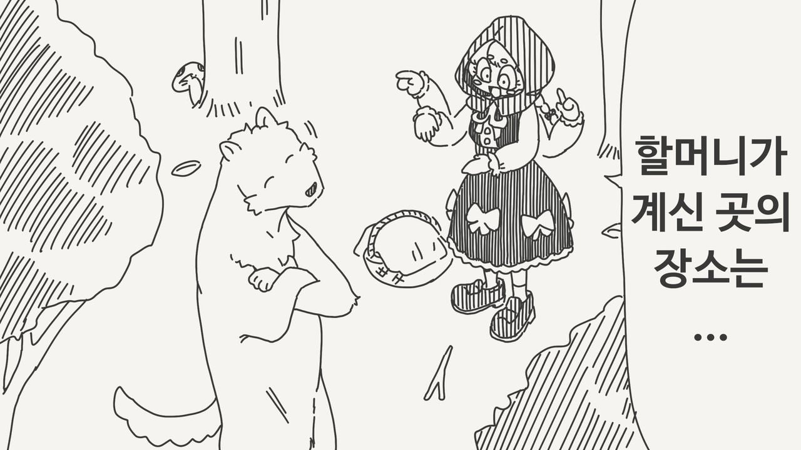
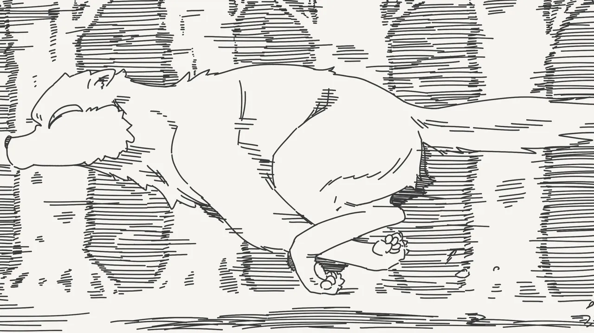
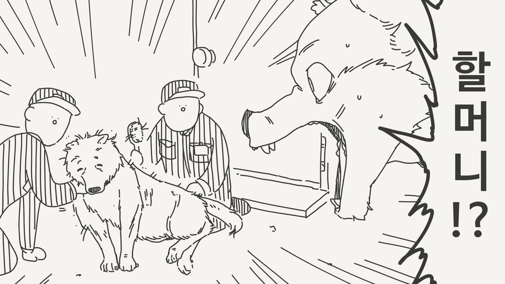
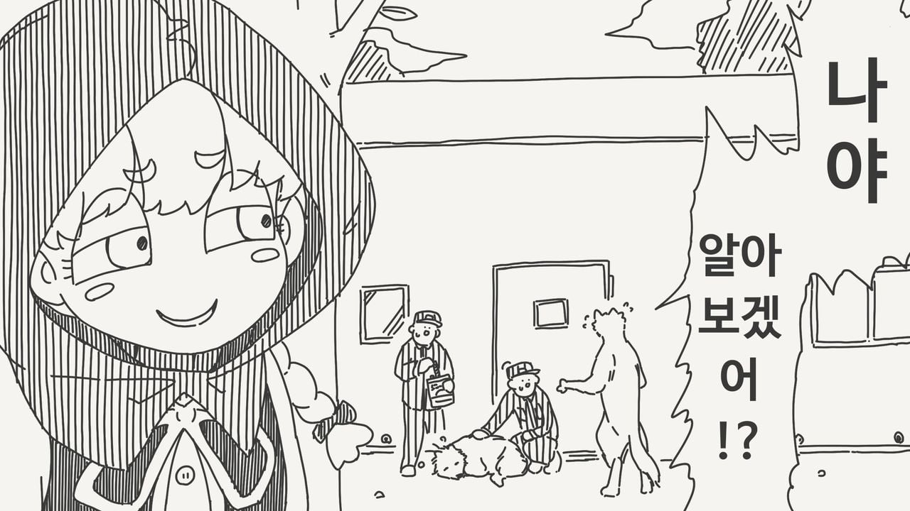

그래도 할머니 잘 케어 받고 계시네
찡헌거
자, 도움을 받았으면 대가를 지불해야지
세워 새꺄
빨간망토, 5세
빨간망토 차차 - 변신 폼
인걸로 하자
우우 쓰레기
아니야!!!!!
5대째인가..
늑대보다 먼저 도착하다니, 빨간 망토의 피지컬이 두렵다

지름길로 알려주면 무조건 헤매니까 큰길위주로 알려줬대요
??? : 키가 또 컸구나...
??? : 뭐어어? 배가 고프다고?
치매걸린 늑대도 보호할 수 있다니 얼마나 유능한 거냐 치바현경